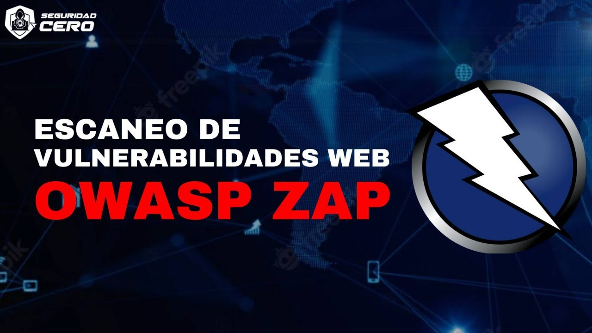
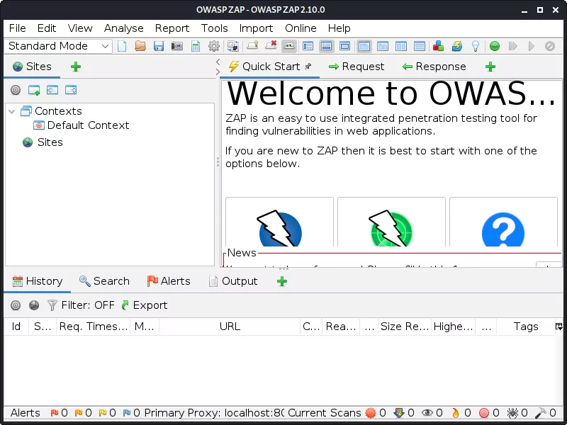
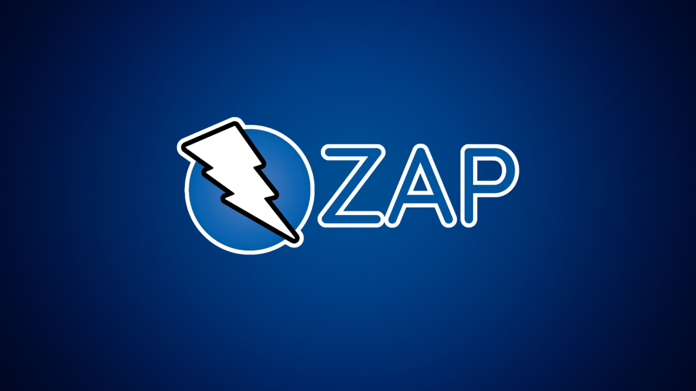

¿Qué es OWASP ZAP?

OWASP ZAP (Zed Attack Proxy) es una herramienta avanzada de ciberseguridad usada para analizar aplicaciones web en busca de vulnerabilidades. Funciona como un proxy interceptador que permite observar, modificar y automatizar el tráfico HTTP/HTTPS entre el cliente y el servidor.
Es ampliamente utilizada en hacking ético y auditorías de seguridad para detectar fallos como inyección SQL, Cross-Site Scripting (XSS), problemas de autenticación y errores en la gestión de sesiones.
Ejemplo de uso de OWASP ZAP

OWASP ZAP puede interceptar una solicitud de inicio de sesión y analizar el comportamiento del servidor frente a diferentes entradas manipuladas.
Un analista de seguridad puede modificar parámetros HTTP, cookies o headers para probar la resistencia de una aplicación frente a ataques simulados y encontrar vulnerabilidades.
Sobre este tema

Este foro está enfocado en el estudio de herramientas de ciberseguridad como OWASP ZAP, utilizada en pruebas de penetración y análisis de aplicaciones web modernas.
Funciones de OWASP ZAP
OWASP ZAP incluye funciones como Proxy intercepting, Spidering, Active Scan y Fuzzing para automatizar la detección de vulnerabilidades en aplicaciones web.
Importante

OWASP ZAP debe usarse únicamente en entornos autorizados como laboratorios, pruebas de seguridad o programas bug bounty.